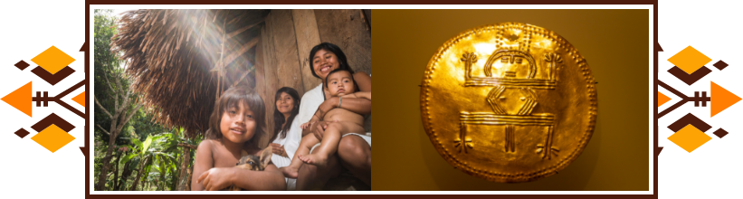
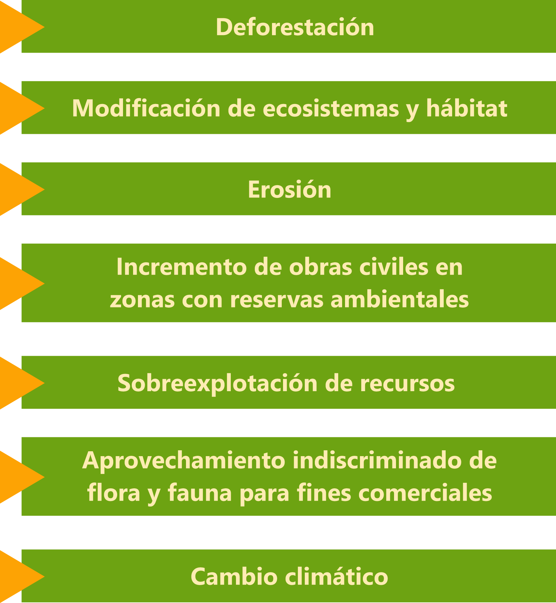
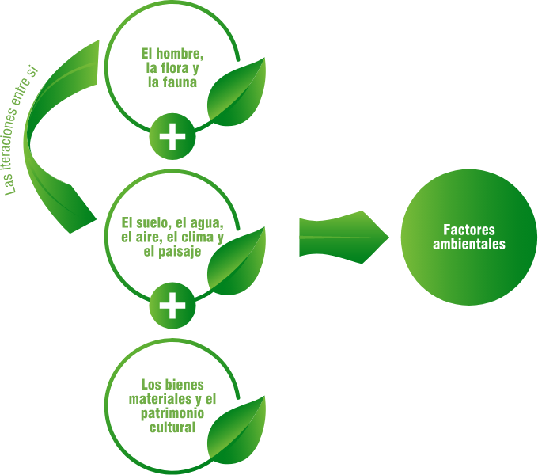
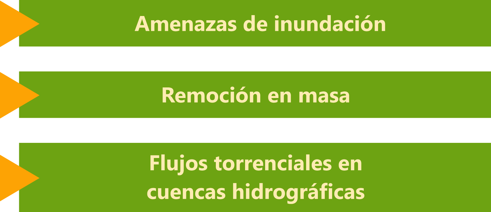

1. Introducción
En el marco del enfoque diferencial étnico el estado colombiano contempla acciones de inclusión social y política que permitan el reconocimiento y garantía de los derechos individuales y colectivos de todos los grupos étnicos.
Con el fin de preservar la cultura e identidad étnica de los grupos, se hace necesario que las intervenciones que se lleven a cabo en estas comunidades, estén concertadas de modo que garanticen la pertinencia, gobernabilidad y respeto a la cosmovisión alineados con el marco legal y los instrumentos de planificación de cada grupo, logrando concertar acciones de manera armónica y pacífica.
Este componente formativo pretende identificar aspectos normativos, socioambientales y apropiar técnicas e instrumentos de caracterización que permita la interpretación y análisis de los medios de interacción de la comunidad con el medio ambiente.
1. Comunidades étnicas
La interacción del hombre con el medio ambiente, ha causado daños irreparables a los ecosistemas, afectando el equilibrio y padeciendo las consecuencias que año tras año se presentan. Las comunidades étnicas a través de sus conocimientos ancestrales, se han convertido en guardianes de la naturaleza siendo los protagonistas en su cuidado, gracias a la constitución política de 1991, que reconoce y garantiza derechos fundamentales de las minorías étnicas. Hoy por hoy el rol de las comunidades se ha fortalecido, gracias a que se ha diseñado un marco normativo que permite a actores internos o externos de una comunidad fijar de manera concertada los planes y proyectos.
1.1 Grupos étnicos y organización
Los grupos étnicos hacen parte de nuestro territorio colombiano, reconocidos a través de la Constitución Política de 1991. Se define como Etnia, a un grupo o comunidad con características culturales y sociales propias, que están estrechamente ligadas a lo largo de su historia, como sujetos colectivos que permiten identificar a sus miembros como pertenecientes a su cosmovisión a través de su ascendencia y convivencia en territorio y organización.
La organización hace referencia a entidades con intereses y valores determinados que agrupa y representa a los pueblos, dentro de sus funciones se encuentra fortalecer y apoyar el gobierno propio, ejercer autoridad con autonomía en su territorio y la defensa de sus derechos humanos y colectivos. (Resguardos o cabildos en comunidades indígenas), (Consejos comunitarios en comunidades negras, afrocolombianas, raizales o palenqueras afros) y (Kumpañy en el pueblo rom).
1.2 Cosmovisión
La interacción que el ser humano instaura con su ambiente social, cultural, espiritual, religioso y ecológico se le denomina Cosmovisión. Al ser una manera de interpretar el mundo, los hombres pueden expresar relaciones con sus dioses, establecer un orden jerárquico del cosmos, guiar la concepción del cuerpo humano, además, con esta base de interpretaciones, logra estructurar la vida comunitaria y agruparlas con base a los mitos que explican su origen.
En este sentido, la cosmovisión Étnica sitúa su origen en la naturaleza, debido a que ella provee los instrumentos para la subsistencia, además permite los medios de vida y posteriormente la producción de su vida material y reproducción, esto se puede comprobar mediante la organización corpórea y física de los seres humanos. Siendo así, es una retribución simbólica la que se realiza con la veneración por el espacio habitado. Por ello el eje fundamental de los pueblos originarios es el territorio, identificando a quienes lo habitan generando así un orden social. Dentro de la visión de territorio no existe separación entre naturaleza y cultura, de este modo logra confluir intereses comunes, a diferencia de la visión occidental.
1.3 Enfoque diferencial étnico-normatividad
Enfoque Diferencial Étnico (EDE), se define como el conjunto de acciones que reducen la brecha existente entre los diferentes segmentos de la población, con el objeto de garantizar la superación de la exclusión social, política, desigualdad económica, y riesgo de las poblaciones ante el conflicto armado. Dichas acciones imparten algunos lineamientos particulares que deben adoptar las instituciones para guiar a sus funcionarios, con el objetivo de brindar una atención y protección oportuna que den garantía a sus derechos.
Las normas que se relacionan a continuación, hacen referencia al reconocimiento de los grupos étnicos y son base primordial en la construcción del Enfoque Diferencial Étnico.
1989
Convenio OIT # 169
El convenio tiene dos postulados básicos: el derecho de los pueblos indígenas a mantener y fortalecer sus culturas, formas de vida e instituciones propias, y su derecho a participar de manera efectiva en las decisiones que les afectan.
1991
Constitución Política de Colombia
Art. 7: reconocimiento del Estado y las comunidades étnicas.
Art. 10: trata del reconocimiento oficial de los idiomas, tanto el del estado como el de los grupos étnicos y el respeto de cada uno.
Art. 13: hace referencia al derecho a la libertad, la protección bien sea de autoridades civiles o militares sin ningún tipo de discriminación.
Art. 63: Se refiere a la protección de la raza, bienes y naturaleza como patrimonio del Estado.
Art. 68: Respeto a los de derecho de respeto de la identidad cultural.
2011
Decreto - Ley 4633
Por medio del cual se dictan medidas de asistencia, reparación integral y restitución de derechos territoriales a las víctimas pertenecientes a los pueblos y comunidades indígenas.
Decreto - Ley 4634
Por medio del cual se dictan medidas de asistencia, reparación integral y restitución de derechos territoriales a las víctimas pertenecientes el pueblo rom o gitano.
Decreto - Ley 4635
Por medio del cual se dictan medidas de asistencia, reparación integral y restitución de derechos territoriales a las víctimas pertenecientes a comunidades negras, afrocolombianas, raizales y palenqueras.
2016
Acuerdo 010
Por medio del cual se adopta la política de atención con enfoque pluralista y diferencial en el SENA.
2. Aspectos ambientales
La oferta de los recursos naturales que hasta hace algunos años parecía inagotable, hoy en día ha disminuido debido al aprovechamiento irracional de estos, trayendo consigo la contaminación del aire, suelo, agua, disminución o extinción de la flora y fauna, todas estas problemáticas son consecuencia de las acciones humanas que afectan considerablemente los ecosistemas.
Colombia es uno de los países con mayor biodiversidad biológica en el mundo y la mayoría de las áreas donde se concentran las riquezas de estos recursos naturales son territorio de comunidades étnicas. Henao (2012) define el territorio desde la perspectiva de grupo étnicos como “la unidad de atributos culturales, biológicos, sociales, políticos, que garantiza su pervivencia, donde se vive y se proyecta su presente y su futuro” (p.10). De cierta manera cualquier acción de intervención que involucre la relación entre la comunidad étnica y el medio ambiente debe estar enfocada hacia la preservación de los recursos, la cultura y costumbres.
Conservar y proteger la biodiversidad y la identidad cultural de los pueblos étnicos es un compromiso social y ambiental que está ligado a la preservación de todos los recursos del medio ambiente incluyendo al ser humano, cualquier actividad que afecte el equilibrio biológico pone en riesgo no solo la especie afectada sino la salud de toda una comunidad. Con el fin de preservar esos territorios étnicos diversos, se deben tomar acciones para mitigar los efectos adversos generados por las actividades domésticas, productivas, culturales y económicas que desarrollan los grupos étnicos en sus territorios.
2.1 Factores ambientales
El ser humano siempre ha necesitado del medio ambiente para desarrollarse como individuo, estas interrelaciones pueden generar modificaciones que provocan problemáticas generalmente a mediano y largo plazo difícil de valorar y que alteran la dinámica y equilibrio de los ecosistemas. La contaminación que el hombre produce en estos ecosistemas también afecta al ser humano en la medida que disminuye la oferta y la calidad de los recursos, impactando directamente el estado de salud.
Actualmente el término biodiversidad ha generado interés económico por el uso de los recursos naturales en la fabricación de medicamentos, alimentos, cosméticos y otras actividades extractivas, consecuencia de estas explotaciones se han desaparecido muchos recursos valiosos de los territorios y se ha generado conflictos por el dominio de estas tierras.
Algunas de las causas directas en la pérdida de biodiversidad generadas por el ser humano son:
El impacto ambiental de las actividades humanas provoca la contaminación de los factores ambientales para la supervivencia de las especies en un ecosistema.
Son considerados factores ambientales:
La calidad y conservación de todos los factores ambientales es directamente proporcional al impacto generado en las interrelaciones entre sí. La mínima alteración en el entorno socio ambiental puede presentar impactos como la presencia de polvo, ruido, malos olores, insalubridad, generación de residuos tóxicos, los cuales afectan a las comunidades que los provocan o las que habitan en el área de influencias generando alteraciones en la salud y enfermedades a largo plazo.
Los impactos ambientales no solo lo generan las actividades cotidianas y los habitantes de una comunidad. La mayoría de estos impactos están asociados a los grandes proyectos que llegan a estas zonas afectando todo el entorno, es por esto que se requiere de la elaboración de una línea base para determinar el estado en el que se encuentran los recursos y ejercer control de todas las acciones antes, durante y después del proceso de intervención.
2.2 Evaluación del impacto ambiental
Protección de la calidad ambiental y calidad de vida humana
El medio ambiente le brinda al ser humano múltiples servicios de gran importancia para el crecimiento económico y social. La naturaleza aporta elementos y fuentes de energía que se hacen indispensables para la subsistencia; pero en contraste esta recibe sus vertimientos contaminantes resultantes de los diferentes modos de producción e interacción del hombre y medio, considerados importantes para el bienestar humano y distintas formas de vida.
El nivel de vulnerabilidad ambiental se asocia al modelo de desarrollo, disponibilidad y fragilidad de los medios de subsistencia, la sobrepoblación, la cultura y la organización social de una comunidad, generando acciones favorables o adversas al medio ambiente o algunos de sus componentes provocados en la ejecución de actividades de aprovechamiento del espacio o del recurso ambiental.
La fragilidad medioambiental tiene en cuenta varios factores, por ejemplo:
Otro ejemplo son las amenazas naturales, socio naturales o antrópicas como la sensibilidad o debilidad de los elementos anteriormente expuestos.
Una vez tomada la decisión de avanzar en cualquier proyecto que representa alguna afectación al medio, se debe realizar una Evaluación de Impacto Ambiental simple (EIA), acorde con el procedimiento administrativo legalmente establecido.
La Evaluación del Impacto Ambiental es la herramienta para gestionar la protección del medio ambiente y valorar los impactos ambientales, identificando la relación de causa-efecto que influyen sobre el medio ambiente, la salud humana y el ecosistema producto de las actividades humanas, con el fin de predecir, valorar, interpretar y prevenir. Esta evaluación facilita la toma de decisiones y gestiona la protección del medio ambiente con las comunidades en los proyectos, planes o programas que se desarrollen en sus territorios.
La participación de la comunidad étnica en la evaluación de impacto ambiental es fundamental, son ellos los que ejercen las acciones al medio ambiente generando cambios positivos o negativos que pongan en peligro la biodiversidad del entorno, es por esto que de acuerdo a la inclusión de las comunidades étnicas se destaca que los proyectos que requieran licencia ambiental por parte de alguna autoridad como ANLA, CAR, CDS, deben contar con un certificado expedido por el Ministerio del Interior en cuanto a Consulta Previa, de acuerdo a la normatividad vigente.
La evaluación del impacto ambiental también permite identificar la vulnerabilidad en la que se encuentra el estado de salud de una población, facilitando de esta manera el diagnóstico de factores y la toma de decisiones para mitigar o corregir esta situación.
2.3 Normatividad aplicada al medio ambiente
En el siguiente listado, se realiza la compilación de la normatividad ambiental aplicable para Colombia.
1974
Decreto 2811
Código nacional de los recursos naturales renovables y de protección del medio ambiente.
Por el cual se dicta el Código Nacional de Recursos Naturales Renovables y de Protección al Medio Ambiente.
1978
Decreto 1681
Sobre los recursos hidrobiológicos. Para asegurar la conservación, el fomento y el aprovechamiento de los recursos hidrobiológicos y del medio acuático.
1979
Ley 09
Código sanitario, su objeto principal responde a la conservación de la salud y el bienestar humano.
1990
Ley 30
Por medio de la cual se aprueba el Convenio de Viena para la Protección de la Capa de Ozono. Viena, 22 de marzo de 1985.
1991
Constitución Política de Colombia
Art 49. Atención de la salud y saneamiento ambiental.
Art 58. Función ecológica de la propiedad privada.
Art 99. Establece la obligatoriedad de tramitar el respectivo permiso de explotación de material de arrastre.
Arts. 77-78. Clasificación de aguas.
Arts. 86 -89. Derecho a uso del agua.
Art 95. Protección de los recursos culturales y naturales del país.
1992
Lay 29
Por medio de la cual se aprueba el "Protocolo de Montreal relativo a las sustancias agotadoras de la capa de ozono".
1993
Lay 99
Mediante el cual se crea el Ministerio de Ambiente y se organiza la administración de los recursos naturales a nivel regional. Se crean o redefinen las funciones de las Corporaciones Autónomas Regionales.
1995
Decreto 2107
Por medio del cual se modifica parcialmente el decreto 948 de 1995 que contiene el reglamento de Protección y control de la calidad del aire.
Documento CONPES 1750
Establece las políticas de manejo de las aguas.
1996
Decreto 605 de 1996
Reglamenta los procedimientos de potabilización y suministro de agua para consumo humano.
2001
2015
Decreto 2015
Por medio del cual se expide el Decreto Único Reglamentario del Sector Ambiente y Desarrollo Sostenible.
2017
Resolución 2254
Por la cual se adopta la norma de calidad del aire ambiente y se dictan otras disposiciones.
3. Caracterización
Conocer el contexto socio ambiental de la comunidad étnica de manera integral. En Colombia la diversidad étnica hace referencia al reconocimiento y existencia de tres grupos étnicos: comunidades negras, afrocolombianas, raizales y palenqueras- NARP, pueblos indígenas y el pueblo rom o gitano. Con el fin de preservar la identidad étnica del país se busca implementar acciones que permitan la inclusión con enfoque diferencial étnico en las diversas intervenciones que se desarrollen en sus territorios, promoviendo la participación armónica en las decisiones que afecten su vida social, cultural, económica, ambiental productiva y política. Se hace necesario que los actores involucrados o que intervienen con las comunidades étnicas desarrollen un estudio descriptivo donde se recolecta información cualitativa y cuantitativa con el objeto de conocer la organización de la comunidad étnica, su cosmovisión y modo de vivir.
El estudio inicial de la comunidad étnica se define como caracterización, donde se aplican instrumentos y técnicas que permitan reconocer el entorno, analizar la dinámica social, identificar las prácticas productivas y culturales de un territorio, creando una relación colaborativa entre la comunidad y los actores con una mirada integral del espacio.
La caracterización de una comunidad se puede llevar a cabo de diferentes contextos, se puede realizar dependiendo del punto de interés de la intervención con que se vaya a trabajar, abarcando aspectos económicos, productivos, políticos, organizacionales, ambientales o sociales.
3.1 Caracterización socio ambiental de comunidades étnicas
El concepto socio ambiental está relacionado con una visión integral entre aspectos ambientales y sociales de las comunidades étnicas, a través de la descripción de las dinámicas del territorio para conocer el estado del uso o vulnerabilidad en el que se encuentran la oferta ambiental en relación con el grado de interacción social del grupo étnico.
| Ámbito de lo social |
| Presencia de grupo humanos. (demografía) Relaciones entre grupos humanos. (política, económica) Forma de vida de los grupos humanos. (condiciones de vida) Valores, actitudes y comportamientos de los grupos humanos. (cultura) |
| Ámbito de intersección entre lo social y lo ambiental |
| Acción del ser humano sobre el medio ambiente e incidencia de este sobre el ámbito social. |
| Ámbito de lo ambiental |
| Medio natural Aire Agua Suelo Flora Fauna Subsuelo Medio transformado Rural Urbano |
La relación que existe entre los elementos del ámbito social, ambiental y las formas de presión que ejercen las comunidades sobre el medio ambiente (consumo de recursos, disposición de desechos) definen el estado en el que se encuentra el entorno socio ambiental de una comunidad.
La caracterización permite la recolección, procesamiento, análisis y difusión de la información recolectada, los resultados recogidos facilitan la toma de decisiones y la planificación de acciones que contribuyan con el mejoramiento de las condiciones socio ambientales encontradas. Se cuenta con una serie de técnicas e instrumentos que se emplean en los diferentes momentos permitiendo la determinación de los principales factores socio ambientales de la comunidad étnica.
3.2 Técnicas e instrumentos para la caracterización
Toda persona que inicia la intervención con las comunidades étnicas deben prepararse de la mejor manera a través de la consulta de diferentes fuentes, sin embargo, para complementar el conocimiento es necesario realizar visitas a los lugares donde habitan los grupos étnicos donde se interactúe directamente con ellos, logrando observar las condiciones de vida reales permitiendo recopilar información verídica y real.
Los resultados que proporciona la aplicación de las técnicas o instrumentos en la caracterización, son de gran utilidad como fuente secundaria de consulta para otros actores que se involucren a futuro con la comunidad.
3.3 Análisis de información de la caracterización
Una vez recolectada la información a través de las técnicas e instrumentos seleccionados y aplicados, se interpreta la información obtenida y se analiza para facilitar la toma de decisiones y proyectar acciones correspondientes.
El análisis de la información se puede llevar a cabo de manera cualitativa o cuantitativa según la metodología seleccionada.
El análisis cuantitativo
Implica el uso de valores numéricos a través de variables e indicadores que permita obtener información sobre el estado de la relación del medio ambiente y sociedad, se emplea en el caso que se quiere obtener datos estadísticos de la comunidad étnica, permitiendo medir elementos que influyan en la dinámica comportamental de los individuos.
Ejemplo: ¿cuántas familias hacen uso del río para las actividades agrícolas? ¿Cuántas personas no tienen acceso al alcantarillado?
Las ventajas de este método son la objetividad y neutralidad en el análisis de la información, se obtienen resultados representativos, los datos estadísticos respaldan lo observado y vivenciado en la comunidad, y se obtienen datos confiables que facilita la toma de decisiones.
El análisis cualitativo
Busca proyectar conclusiones a través de la interpretación del equipo de trabajo que haya realizado la caracterización, comprendiendo las lógicas de pensamiento que guían las acciones sociales comprendiendo la cultura y cosmovisión. Este análisis se enfoca en los aspectos vivenciales y de interacción con la comunidad étnica teniendo en cuenta evitar involucrarse y emitir juicios que incluyan y desvíen el objetivo de la investigación.
Estos métodos de análisis se complementan a tal manera que el cuantitativo respalda y soporta el análisis cualitativo otorgando al informe de caracterización de la comunidad étnica veracidad, confiabilidad y calidad.
La información recolectada se documenta y se estructura a través de un informe en el cual se describe todos los aspectos geográficos, demográficos, organizacionales, culturales, ambientales, productivos y económicos.
Analizados, en el marco del ámbito social y ambiental en concordancia con las formas de presión que ejercen las comunidades étnicas sobre el medio ambiente (consumo de recursos, disposición de desechos).
Herramientas como matrices, diagramas, mapas, gráficas, tablas facilitan la descripción e interpretación de la información.
Glosario
Adorno:aquello que se pone para la hermosura o mejor parecer de personas o cosas (Real Academia Española, s.f.).
Alta costura:vestuario hecho sobre la medida creado por los diseñadores líderes que, usualmente forma parte de una colección para una estación específica, la cual es determinada por la moda en general (Inexmoda, 2002).
Armadura:conjunto de piezas defensivas con que se revestían los combatientes (Real Academia Española, s.f.).
Atemporal:que está fuera del tiempo o lo trasciende (Real Academia Española, s.f.).
Atuendo:1. m. Atavío, vestido. 2. m. Aparato, ostentación. 3. m. pl. Ál. y Cantb. Aparejos y ornamentos de las caballerías (Real Academia Española, s.f.).
Automatización:acción y efecto de automatizar. Automatizar: 1. tr. Convertir ciertos movimientos en movimientos automáticos o indeliberados. 2. tr. Aplicar la automática a un proceso o a un dispositivo (Real Academia Española, s.f.).
Big data:término que describe el gran volumen de datos, tanto estructurados como no estructurados, que inundan los negocios cada día. Pero no es la cantidad de datos lo que es importante. Lo que importa con el Big Data es lo que las organizaciones hacen con los datos. Big Data se puede analizar para obtener ideas que conduzcan a mejores decisiones y movimientos de negocios estratégicos (Big Data: ¿En qué consiste? Su importancia, desafíos y gobernabilidad, s.f.).
Blazer:chaqueta masculina con doble botonadura, recubierta, con botones dorados característicos, en tejido azul oscuro, emblema en el pecho, bolsillos agregados o simulados. Se lleva con pantalones de franela o de hilo de lana gris oscuro. Desde los años ‘80 se define al blazer también como una chaqueta femenina de corte masculino, no necesariamente con doble abotonadura, que implica cierto estilo dirigencial (Tevisto.com, 2017).
Calzón:prenda de vestir con dos perneras que cubre el cuerpo desde la cintura hasta una altura variable de los muslos (Real Academia Española, s.f.).
Casaca:vestidura ceñida al cuerpo, generalmente de uniforme, con mangas que llegan hasta la muñeca con faldones hasta las corvas (Real Academia Española, s.f.).
Chaqueta:saco masculino y femenino. Abierta delante y alargada a los costados. Puede ser invernal o estival, con botones a fila simple o doble (Tevisto.com, 2017).
Código de vestuario:es un conjunto de reglas, a menudo escritas, con respecto a la ropa. Los códigos de vestimenta se crean a partir de percepciones y normas sociales, y varían según el propósito, las circunstancias y las ocasiones (Wikipedia, s.f.).
Colección:conjunto de elementos de la misma clase reunidos por afición, interés y clasificación que se reflejan en prendas de vestir y accesorios, creados por un diseñador para una temporada.
Color:es la reacción que se genera en los objetos a partir de la luz y el primer contacto entre el mundo material y el ser humano. Están clasificados por matices y tonalidades, desplegando un sinnúmero de colores.
Colorante:que da color. Producto colorante (Real Academia Española, s.f.).
Comunicación de moda:es la capacidad de mostrar a los demás como se ve el mundo desde distintas perspectivas, desarrollando propuestas de productos moda capaces de conectar con los gustos de otros.
Concepto de moda:representación mental que las personas hacen para comprender algo, que puede ser: un objeto, cualidad, situación, lugar, momento histórico, con el fin de desarrollar las características que darán la identidad a un producto de forma creativa.
Consumo socialmente responsable:consumo donde el consumidor tiene en cuenta las consecuencias públicas de su consumo privado e intenta usar su poder de compra para lograr el cambio social (Dueñas, S., Perdomo-Ortiz, J., & Villa, L). (2014).
Contexto:entorno físico o de situación, político, histórico, cultural o de cualquier otra índole, en el que se considera un hecho (Real Academia Española, s.f.).
Corsé:posee ajustador, modela la figura desde el busto hasta la cintura. Tiene tirantes ajustables en su parte inferior, en donde se enlazan las medias (Tevisto.com, 2017).
Coser:1. tr. Unir con hilo, generalmente enhebrado en la aguja, dos o más pedazos de tela, cuero u otra materia. 2. tr. Hacer o reparar una prenda, especialmente de ropa de vestir, con aguja o a máquina (Real Academia Española, s.f.).
Cosmética:1. s. f. INDUMENTARIA Y MODA Conjunto de los productos utilizados para la higiene y la belleza, en especial de la cara. 2. INDUSTRIA Técnica de elaboración y aplicación de productos cosméticos para la higiene y la belleza de la persona (Farlex, s.f.).
Crinolina:1. Tejido resistente para refuerzo en prendas de vestir, usado como plastrón, de ligamento tafetán con urdimbre de algodón y trama de crin de caballo. 2. Término utilizado para la forma inflada de los vestidos y faldas, inicialmente usados en 1842 (Inexmoda, 2002).
Cuerpo:se refiere a la figura humana que está conformada por cabeza, tronco y extremidades, cuya estructura y morfología es llamada anatomía y que es el portador principal de las creaciones en el mundo del vestuario.
Cultura material:es el conjunto de objetos utilizados por el hombre y que formaron parte de su vida cotidiana (Región de Murcia Digital, s.f.).
Cultura y moda:conjunto de características comunes a un grupo de personas que las definen y diferencian de otros grupos y tienen relación directa con las ideas, tradiciones, costumbres y clases sociales, de un propio país o región.
Ecología:ciencia que estudia los seres vivos como habitantes de un medio, y las relaciones que mantienen entre sí y con el propio medio (Real Academia Española, s.f.).
Eduardiana:la época eduardiana o era eduardiana en el Reino Unido es el período que cubre el reinado de Eduardo VII, y se extiende desde 1901 a 1910. El fallecimiento de la reina Victoria en enero de 1901 y la sucesión de su hijo Eduardo, marcaron el inicio de un nuevo siglo y el final de la época victoriana. Aunque Victoria había rechazado a la sociedad, Eduardo era el líder de una élite a la moda que estableció un estilo influenciado por el arte y la moda de Europa continental, posiblemente debido a la afición de viajar del rey. La era estuvo marcada por cambios significantes en la política a medida que sectores de la sociedad que habían sido ampliamente excluidos del ejercicio del poder en el pasado como los obreros plebeyos y las mujeres, se volvieron cada vez más politizados (Wikipedia, s.f.).
Estampación:proceso de impresión para obtener un diseño, que puede ser plano o en relieve sobre distintos materiales: papel, tela, cuero, etc. (Wikipedia, s.f.).
Proceso textil por el que se forman diseños coloreados por zonas, con los que se embellecen y ornamenta el artículo. Para ello se emplean pigmentos y colorantes (Inexmoda, 2002).
Estética:es la percepción de belleza que tiene cada individuo y que viene acompañada de gustos, preferencias y vivencias individuales.
Estilismo:en el mundo de la moda y de la decoración especialmente, actividad profesional que se ocupa del estilo y de la imagen (Inexmoda, 2002).
Falda:1. f. Prenda de vestir que cae desde la cintura. 2. f. Parte de la vestimenta desde la cintura hacia abajo. U. m. en pl. con el mismo significado que en sing. 3. f. Cada una de las partes de una prenda de vestir que cae suelta sin ceñirse al cuerpo (Real Academia Española, s.f.).
Feminismo:1. m. Principio de igualdad de derechos de la mujer y el hombre. 2. m. Movimiento que lucha por la realización efectiva en todos los órdenes del feminismo (Real Academia Española, s.f.).
Futurismo:movimiento impulsado a comienzos del siglo XX por el poeta italiano F. T. Marinetti, y que expresa artísticamente los avances de la técnica y de la sociedad moderna (Real Academia Española, s.f.).
Glamour:cualidad de la persona que tiene un atractivo o belleza sofisticados, en especial en el mundo de la moda o del espectáculo La película mostraba el glamour de la alta sociedad europea (Farlex, s.f.).
Globalización:1. f. Acción de globalizar (‖ integrar cosas diversas). Haría falta una globalización de los datos parciales obtenidos. 2. f. Extensión del ámbito propio de instituciones sociales, políticas y jurídicas a un plano internacional. El Tribunal Penal Internacional es un efecto de la globalización. 3. f. Difusión mundial de modos, valores o tendencias que fomenta la uniformidad de gustos y costumbres. 4. f. Econ. Proceso por el que las economías y mercados, con el desarrollo de las tecnologías de la comunicación, adquieren una dimensión mundial, de modo que dependen cada vez más de los mercados externos y menos de la acción reguladora de los Gobiernos (Real Academia Española, s.f.).
Hilatura:1. f. Arte de hilar la lana, el algodón y otras materias análogas. 2. f. Industria y comercialización del hilado. 3. f. Establecimiento o fábrica donde se hilan las materias textiles (Real Academia Española, s.f.).
Hippy:Jipi. 1. adj. Dicho de un movimiento: De carácter contracultural y juvenil, surgido en los Estados Unidos de América en la década de 1960 y caracterizado por su pacifismo y su actitud inconformista hacia las estructuras sociales vigentes. 2. adj. Perteneciente o relativo al movimiento jipi. 3. m. y f. Partidario del movimiento jipi (Real Academia Española, s.f.).
Indumentaria:es el conjunto de prendas generalmente textiles fabricadas con diversos materiales y usadas para vestirse, protegerse del clima adverso y en ocasiones por pudor (ropa interior) (Wikiquote, s.f.).
Inteligencia artificial:es la inteligencia llevada a cabo por máquinas. En ciencias de la computación, una máquina «inteligente» ideal es un agente flexible que percibe su entorno y lleva a cabo acciones que maximicen sus posibilidades de éxito en algún objetivo o tarea (Wikipedia, s.f.).
Investigar moda:es la acción que se realiza para buscar la información necesaria de una forma creativa, con el fin de obtener las herramientas que se utilizaran en el desarrollo de un producto moda.
Lana:fibra proteica que posee propiedades como aislamiento térmico elevado, buena estabilidad dimensional, gran absorbencia, elasticidad y tendencia a apelmazarse (Inexmoda, 2002).
Lujo:1. m. Abundancia en el adorno o en comodidades y objetos suntuosos. Vivía rodeada de lujo. 2. m. Abundancia de cosas o de medios. Dispone de todo lujo DE recursos para el proyecto. 3. m. Aquello que supera los medios normales de alguien para conseguirlo. Para ellos es un lujo poder ir de vacaciones. 4. m. Elevada categoría, excelencia o exquisitez que posee algo por la calidad de las materias primas empleadas en su fabricación, sus altas prestaciones o servicios, etc. Destacaban el lujo y el refinamiento de la decoración. Coche, zapatos, edición de lujo. 5. m. Persona o cosa valiosa, excepcional o extraordinaria. El profesor de arte es un lujo. Ha sido un lujo viajar con ustedes (Real Academia Española, s.f.).
Malla:5. f. Tejido semejante al de la malla de la red. 7. f. Prenda de vestir elástica, fina y ajustada al cuerpo. U. t. en pl. con el mismo significado que en sing. (Real Academia Española, s.f.).
Manga:1. f. Parte del vestido en que se mete el brazo (Real Academia Española, s.f.).
Marca:(En inglés brand) es una identificación comercial primordial o el conjunto de varios identificadores con los que se relaciona y ofrece un producto o servicio en el mercado (Wikipedia, s.f.).
Moda:1. f. Uso, modo o costumbre que está en boga durante algún tiempo, o en determinado país. 2. f. Gusto colectivo y cambiante en lo relativo a prendas de vestir y complementos. 3. f. Conjunto de la vestimenta y los adornos de moda. 4. f. Estad. Valor que aparece con mayor frecuencia en una serie de medidas (Real Academia Española, s.f.).
Modisto:1. m. Hombre que se dedica a hacer prendas de vestir o a crear modas o modelos de ropa, principalmente para mujer (Real Academia Española, s.f.).
New look:(“Nuevo aire”, “nuevo aspecto”, “nuevo look”) es un estilo en el diseño de la moda, creado por Christian Dior en 1947, aunque anticipado ya por Cristóbal Balenciaga, que revolucionó el mundo de la moda posterior a la Segunda Guerra Mundial (Wikipedia, s.f.).
Pantalón:1. m. Prenda de vestir que se ajusta a la cintura y llega generalmente hasta el pie, cubriendo cada pierna separadamente. U. t. en pl. con el mismo significado que en sing. (Real Academia Española, s.f.).
Piercieng:(Anglicismo, gerundio del verbo to pierce: 'agujerear', 'perforar', 'atravesar'), adaptada al español como piercing, es la práctica de perforar una parte del cuerpo humano para insertar aretes u otras piezas de joyería. Estas perforaciones son una forma de modificación corporal y reflejan tanto valores culturales, como religiosos y espirituales, y además parte de la moda, erotismo, gustos personales o identificación con una subcultura (Wikipedia, s.f.).
Power dressing:nacido en la segunda mitad de la década de 1970 y desarrollado en la década de 1980, el estilo de vestir es un estilo de moda que permite a las mujeres establecer su autoridad en un entorno profesional y político tradicionalmente dominado por los hombres (Wikipedia, s.f.).
Realidad Aumentada:término que se usa para describir al conjunto de tecnologías que permiten que un usuario visualice parte del mundo real a través de un dispositivo tecnológico con información gráfica añadida por este. El dispositivo, o conjunto de dispositivos, añaden información virtual a la información física ya existente, es decir, una parte virtual aparece en la realidad. De esta manera los elementos físicos tangibles se combinan con elementos virtuales, creando así una realidad aumentada en tiempo real (Wikipedia, s.f.).
Robotización:1. f. Acción y efecto de robotizar.
Robotizar: 1. tr. Introducir robots en procesos industriales. 2. tr. Mecanizar (‖ dar la regularidad de una máquina). 3. tr. Dar a algo o a alguien carácter de robot (Real Academia Española, s.f.).
Romanticismo:1. m. Movimiento cultural que se desarrolla en Europa desde fines del siglo XVIII y durante la primera mitad del XIX y que, en oposición al Neoclasicismo, exalta la libertad creativa, la fantasía y los sentimientos (Real Academia Española, s.f.).
Ropaje:1. m. Vestido u ornato exterior del cuerpo. 2. m. Vestidura larga, vistosa y de autoridad. 3. m. Conjunto de ropas. 4. m. Forma, modo de expresión, lenguaje (Real Academia Española, s.f.).
Sastre:traje sastre: Conjunto femenino compuesto de saco de corte masculino, acompañado de falda confeccionada en el mismo tejido. Nace a fines del siglo XIX, su nombre deriva del hecho de que lo confeccionaba el sastre. El traje puede tener también pantalones (Tevisto.com, 2017).
1. m. y f. Persona que tiene por oficio cortar y coser trajes, principalmente de hombre (Real Academia Española, s.f.).
Individuo que se dedica a confeccionar ropa para hombre. El sastre, de este modo, corta y cose pantalones, sacos y otras prendas de vestir masculinas. Por ejemplo: “Voy a ir al sastre para que me arregle el traje: me queda un poco grande”, “Tenemos que conseguir un sastre antes del casamiento”, “Mi abuelo era sastre y cosía la ropa de toda la familia” (Definicion.de, s.f.).
Sastrería:1. f. Oficio de sastre. 2. f. Tienda y taller de sastre (Real Academia Española, s.f.).
Taller en donde se hacen las prendas exteriores femeninas y masculinas, de sastrería (Inexmoda, 2002).
Sociedad:1. f. Conjunto de personas, pueblos o naciones que conviven bajo normas comunes. Viven marginados de la sociedad. 2. f. Agrupación natural o pactada de personas, organizada para cooperar en la consecución de determinados fines. Se darán ayudas a sociedades culturales. 3. f. Agrupación natural de algunos animales. Las abejas viven en sociedad. 4. f. Com. Agrupación comercial de carácter legal que cuenta con un capital inicial formado con las aportaciones de sus miembros (Real Academia Española, s.f.).
Sostenibilidad:1. f. Cualidad de sostenible. Sostenible: Especialmente en ecología y economía, que se puede mantener durante largo tiempo sin agotar los recursos o causar grave daño al medio ambiente. Desarrollo, economía sostenible (Real Academia Española, s.f.).
Talle:del fr. taille. 1. m. Disposición o proporción del cuerpo humano. 2. m. Cintura del cuerpo humano. 3. m. Forma que se da al vestido, cortándolo y proporcionándolo al cuerpo. 4. m. Parte del vestido que corresponde a la cintura. 5. m. Medida tomada para un vestido o traje, comprendida desde el cuello a la cintura, tanto por delante como por detrás (Real Academia Española, s.f.).
Tecnología:1. f. Conjunto de teorías y de técnicas que permiten el aprovechamiento práctico del conocimiento científico. 2. f. Tratado de los términos técnicos. 3. f. Lenguaje propio de una ciencia o de un arte. 4. f. Conjunto de los instrumentos y procedimientos industriales de un determinado sector o producto (Real Academia Española, s.f.).
Tejeduría:1. f. Arte de tejer. 2. f. Taller o lugar en que están los telares y trabajan los tejedores (Real Academia Española, s.f.).
Tejido:del part. de tejer. 1. m. Textura de una tela. El color de esta tela es bueno, pero el tejido es flojo. 2. m. Material hecho tejiendo. 3. m. Cosa formada al entrelazar varios elementos (Real Academia Española, s.f.).
Tela:1. f. Obra, especialmente la tejida en el telar, hecha de muchos hilos, que, entrecruzados alternativa y regularmente en toda su longitud, forman como una lámina. 2. f. Obra semejante a la tela de muchos hilos, pero formada por series alineadas de puntos o lazadas hechas con un mismo hilo, especialmente la tela de punto elástico tejida a máquina. 3. f. Material que se pone de una vez en el telar (Real Academia Española, s.f.).
Lámina flexible compuesta por muchos hilos que se entrecruzan de manera regular y alternativa en toda la longitud. Las telas pueden ser las obras tejidas en el telar o aquellas semejantes que se encuentran formadas por series alineadas de puntos o lazadas hechas con un mismo hilo (Definicion.de, s.f.).
Tendencia:corriente o preferencia hacia determinados fines. Por ejemplo: “Lionel Messi es un gran jugador, aunque tiene tendencia a encarar por el lado izquierdo, lo que ayuda a predecir sus movimientos”, “La tendencia alcista de los precios preocupa a los economistas”, “A dos horas del cierre de los comicios, no hay una tendencia clara que permita vislumbrar un ganador” (Definicion.de, s.f.).
Túnica:1. f. Vestidura exterior amplia y larga. 2. f. Vestidura de lana que usan algunos religiosos debajo de los hábitos. 3. f. Vestidura con o sin mangas, que usaban los antiguos y les servía como de camisa (Real Academia Española, s.f.).
Prenda de vestir que se caracteriza por su extensión y su amplitud. Esta vestidura, de gran antigüedad, permite cubrir desde el cuello hasta las piernas (Definicion.de, s.f.).
Vestido:1. m. Prenda o conjunto de prendas exteriores con que se cubre el cuerpo. 2. m. Traje enterizo de la mujer (Real Academia Española, s.f.).
Vestimenta:1. f. vestido. 2. f. vestidura (‖ vestido del sacerdote para el culto divino). U. m. en pl. con el mismo significado que en sing. (Real Academia Española, s.f.).
Vestuario:1. m. vestido (‖ prendas con que se cubre el cuerpo). 2. m. Conjunto de trajes necesarios para una representación escénica. 3. m. En los campos de deportes, piscinas, etc., local destinado a cambiarse de ropa. 4. m. Conjunto de jugadores que componen un equipo deportivo. 5. m. Aquello que en algunas comunidades o cuerpos eclesiásticos se da a sus individuos, en especie o en dinero, para vestirse. 6. m. Sitio, en algunas iglesias, donde se revisten los eclesiásticos. 7. m. Parte del teatro en que están los cuartos o aposentos donde se visten las personas que han de tomar parte en la representación dramática o en otro espectáculo teatral. 8. m. Antiguamente, toda la parte interior del teatro. 9. m. Renta que se daba en las iglesias y catedrales a los que tenían obligación de vestirse en las funciones de iglesia o coro. 10. m. Mil. Uniforme de los soldados y demás individuos de tropa (Real Academia Española, s.f.).
Conjunto de prendas con que se cubre el cuerpo. El término puede utilizarse como sinónimo de vestido. Por ejemplo: “Aún no elegí el vestuario para esta noche”, “Tu madre siempre se destaca por su elegante vestuario”, “Creo que no tengo vestuario apropiado para esta ocasión”(Definicion.de, s.f.).
Wearable:La tecnología ponible o vestible (del inglés wearable technology), tecnología corporal, ropa tecnológica,1 ropa inteligente,2 o electrónica textil,3 son dispositivos electrónicos inteligentes incorporados a la vestimenta o usados corporalmente como implantes o accesorios que pueden actuar como extensión del cuerpo o mente del usuario. Los dispositivos vestibles como los monitores de actividad son un buen ejemplo del Internet de las cosas, puesto que cosas como la electrónica, software, sensores y conectividad son mecanismos que permiten a los objetos intercambiar información a través de Internet con un fabricante, operador u otros dispositivos conectados, sin necesitar de la intervención humana. La tecnología vestible tiene una variedad de aplicaciones que crece en medida que el campo de conocimiento se expande. Se ha popularizado con el consumo exponencial de los relojes inteligentes y los seguidores de actividad. Aparte de usos comerciales, esta tecnología está siendo incorporada a la navegación de sistemas, avances en la industria textil y la salud (Wikipedia, s.f.).
Yelmo:1. m. Pieza de la armadura antigua que resguardaba la cabeza y el rostro, y se componía de morrión, visera y babera (Real Academia Española, s.f.).
Concepto que, según detalla el diccionario de la Real Academia Española (RAE), alude al sector de las armaduras que, en la antigüedad, protegía el rostro y la cabeza del usuario. El yelmo, en este sentido, estaba formado por diferentes componentes, como la celada y la visera (Definicion.de, s.f.).
Material complementario
| Nombre del documento o material | Tipo de material | Enlace del recurso |
|---|---|---|
| Desconocido. (s.f), Proyecto graduación Universidad de Palermo 631. | Ver | |
| Guillen, A. (2014). Trabajo Final de Grado: Indumentaria Prêt-à-porter. Articulación con valores de Alta costura. Universidad de Palermo. | Ver | |
| Museo del traje. (2018). Trajes españoles del siglo XVIII. | Ver | |
| Tevisto.com (2017). Diccionario de la moda. | Ver | |
| Torales, E. y Meyer, M. (Sin fecha). Elementos y principios del diseño: Diseño de Indumentaria Urbana I. | Ver |
Referencias bibliográficas
Acosta, M. (2012). Historia Del Vestido.http://comunicacioneducativamaster.blogspot.com/
Aleatório comida e outras coisas. (2015a). Moda Años 80 [video]. YouTube.https://www.youtube.com/watch?v=YtZbuXCR2Gw
Aleatório comida e outras coisas. (2015b). Moda Anos 90 [video]. YouTube.https://www.youtube.com/watch?v=8hR02rBJ9Hs
Allante, P. (2007). Historia de la moda Cap 3 Pelucas y encajes [video]. YouTube.https://www.youtube.com/watch?v=hv_TOh-YyYs&feature=youtu.be
Baldovino, P. (2020). SENA, Itaguí, Antioquia. Big Data: ¿En qué consiste? Su importancia, desafíos y gobernabilidad. (s.f.). Powerdata.https://www.powerdata.es/big-data
British Pathé. (2011). Paco Rabanne Metal Dresses (1969 Original Footage) [video]. YouTube. https://www.youtube.com/watch?v=kHiCcv5g0n8&feature=youtu.be
British Pathé. (2014). Fashion House (1950-1969) [video]. YouTube.https://www.youtube.com/watch?v=63Vxs02Qq6w&feature=youtu.be
Calvo, F. S. (2016). El nuevo vestir: cómo se hace y se lleva la moda hoy. (R. Editores (Ed.)). Carchano, F. (2015). MUJER Y MODA EN EL SIGLO XXI [video]. YouTube.https://www.youtube.com/watch?v=Nxojjjb-pqM
Cárdenas, L. (2017). A cada década su tendencia. Así se resume un siglo de moda | itfashion.com. It Fashion.https://www.itfashion.com/moda/a-cada-decada-su-tendencia-asi-se-resume-un-siglo-de-moda/
Chanel. (s.f.). Inside CHANEL [video]. YouTube.https://www.youtube.com/playlist?list=PLEE61EDB90F0AA88F
CountDisco1. (2009). 1930 Fashion Show [video]. YouTube.https://www.youtube.com/watch?v=9b8DdMHLzEU
Definicion.de. (s.f.). Definicion.de. Definicion.De. Retrieved July 6, 2020.https://definicion.de/sastre/
Departamento de Historia del Instituto Nacional. (2018). Primeras civilizaciones - La moda en el Antiguo Egipto [video]. YouTube.https://www.youtube.com/watch?v=R5xXX92AkmE&t=106s
Dueñas, S., Perdomo-Ortiz, J., & Villa, L. (2014). El concepto de consumo socialmente responsable y su medición. Una revisión de la literatura. Estudios Gerenciales, 30(132), 287–300.https://doi.org/10.1016/j.estger.2014.01.022
Dyoniss99. (2010). Coco Chanel vintage fashion shows [video]. YouTube.https://www.youtube.com/watch?v=4LC5VbEJm6I
Estilocracia. (2019). Cómo era la moda de los años 90s: ¿qué looks sobrevivieron y se sigue usando? [video]. YouTube. [video]. YouTube.https://www.youtube.com/watch?v=sjjGogV1tME&feature=youtu.be
FabulousSims2. (2012). Fashion 50’s 60’s 70’s 80’s 90’s and today [video]. YouTube.https://www.youtube.com/watch?v=PM2UTIXdGH8&feature=youtu.be
FADU – UBA. (2020). Cuerpo, distancia y protección: Un recorrido histórico. Historia del traje.https://historiadeltraje.com/category/renacimiento/
Farias, G. (2019a). Industria Textil y Moda 4.0 - Presentación Innovation Fashion Forum [video]. YouTube.https://www.youtube.com/watch?v=w3zW24xEnNY
Farias, G. (2019b). Las cinco automatizaciones que lanzan la moda 4.0. Gabriel Farias Iribarren.https://gabrielfariasiribarren.com/las-cinco-automatizaciones-que-lanzan-la-moda-4-0/
Farlex. (s.f.). The free dictionary. The Free Dictionary by Farlex. Retrieved July 6, 2020.https://es.thefreedictionary.com/cosmética
Fashion – Bloshka. (s.f.). Bloshka. Retrieved July 6, 2020.http://bloshka.info/category/fashion
Fedac. (s.f.). Vestimenta en los siglos XVIII y XIX – Cultura Tradicional. Fedac. Retrieved July 1, 2020.https://culturatradicionalgc.org/vestimenta-siglos-xviii/
Fernández, J. (1988). Arte efímero y espacio estético (Anthropos). Fundación Pro Tejer. (2018). Innovación en la industria textil [video]. YouTube.https://www.youtube.com/watch?v=zJg8k5-QJOw
Geringer, S., Nieves, M. M. J. de, & Soto, Á. L. (2001). La moda: color, estilo y diseño (3a. ed.). McGraw-Hill Interamericana.http://ebookcentral.proquest.com/lib/senavirtualsp/detail.action?docID=3195044
Glam Inc. (s.f.). Glam, Inc. [video]. YouTube.https://www.youtube.com/channel/UCrKE6lsllHfJgcUexz3BBhA
Glamour. (2018). 100 Years of French Fashion | Glamour [video]. YouTube.https://www.youtube.com/watch?v=7IP5zAefiiQ&feature=youtu.be
Glamourdaze. (2010). 1950’s Fashion - The Designers [video]. YouTube.https://www.youtube.com/watch?v=Tyqg2XcoeJw
Gómez, S. (2020). SENA, Itagüí, Antioquia. Gwilt, A. (2014). Moda sostenible: una guía práctica (E. G. Gili (Ed.)). Haztelalista. (2016). 10 cosas de los años 90 que ojalá volvieran [video]. YouTube.https://www.youtube.com/watch?v=HE7PatQjKn4
Historia de la Moda — RENACIMIENTO Siglo XIV a XVI. (s.f.). Retrieved June 30, 2020.https://asainzfashionhistory.tumblr.com/post/154085025148/renacimiento-siglo-xiv-a-xvi
Hong, Z. (2019). Fashion History: 1900-1920 [video]. YouTube.https://www.youtube.com/watch?v=ViNDmCX3DOw&feature=youtu.be
Inexmoda. (s.f.). Inexmoda [video]. YouTube.https://www.youtube.com/c/inexmoda/videos
Inexmoda. (2002). Glosario textil y de moda. Inexmoda. Inexmoda, & Bena, M. (2019). Moda 4.0 para Dummies - Colombiamoda 2019 [video]. YouTube.https://www.youtube.com/watch?v=id9qip1mWZM
Instituto de la indumentaria de Kioto. (2004). Moda desde el siglo XVIII al siglo XX. Köln : Tashen. Jensinsanity. (2011). 80s fashion [video]. YouTube.https://www.youtube.com/watch?v=XxsXi5_WZIU
JJlife’s. (2016). Los felices años 20 Documental [video]. YouTube.https://www.youtube.com/watch?v=h8XQtzswhTU&feature=youtu.be
Laver, J. (2005). Libro Breve Historia del Traje y la Moda (9th ed.). Cátedra Ediciones.https://www.buscalibre.com.co/libro-breve-historia-del-traje-y-la-moda/9788437607320/p/978957
Lehnert, G. (2000). Historia de la moda del siglo XX. Könemann.
Lucifer Sam. (2013a). Fashion from 1969 - Paco Rabanne [video]. YouTube. Lucifer Sam. (2013b). Fashion from 1969 - Pierre Cardin [video]. YouTube.https://www.youtube.com/watch?v=z_rsVHSXrY4&feature=youtu.be&list=RDatl9lIS7eUo
Luisiana de mal. (2016). Moda a través de los 60s, 70s, 80s y 90s [video]. YouTube.https://www.youtube.com/watch?v=r7JIYEHZLhg&feature=youtu.be
Madrid, M. (2018). Música década 1920-1930 [video]. YouTube.https://www.youtube.com/watch?v=r7OXmYZ0yC8&feature=youtu.be
Moda años 40. (s.f.). Pinterest. Retrieved July 1, 2020.https://www.pinterest.es/aliciapalmira/moda-años-40/
Moda del periodo rococó - Diccionario Textil. (s.f.). TEXSITE.Info. Retrieved July 1, 2020.http://es.texsite.info/Moda_del_periodo_rococó
Moda siglo XX - Secretos de la moda. (s.f.). Secretos de La Moda. Retrieved July 1, 2020.https://sites.google.com/site/secretosdelamodaar/historia-de-la-moda/moda-siglo-xx#TOC-D-cadas-:-1900-1910
Mohamed, N., & TEDx Talks. (2020). Industria 4.0 “Cambiando esquemas y creando nuevas oportunidades” | Nasser Mohamed | TEDxUANL [video].https://www.youtube.com/watch?v=K2cOViIZWD8
Morgan, A. (2015). The True Cost. Life Is My Movie Entertainment Company / Untold Creative.
Muñoz, M. (2016, 7 de mayo). La moda un “virus” que contagia a distintos y distantes.https://www.efe.com/efe/espana/gente/la-moda-un-virus-que-contagia-a-distintos-y-distantes/10007-2919250
Museo del Romanticismo. (2016). Exposición “La Moda Romántica”, Museo del Romanticismo, 25 octubre 2016 - 5 marzo 2017 [video]. YouTube.https://www.youtube.com/watch?v=CP7Hoc82WIg
Museo Vasco de Bilbao. (2018). Museo Vasco de Bilbao acoge una muestra de ropa del siglo XVIII - [video]. YouTube.https://www.youtube.com/watch?v=njZOrgpd8yg&feature=youtu.be
Mycompasstv. (2017). Dior Fashion Show 1960 - [video]. YouTube.https://www.youtube.com/watch?v=FOkfn6mk7dY&feature=youtu.be
MyFootage001. (2011). Twiggy in a Fashion Show, 1960’s [video]. YouTube.https://www.youtube.com/watch?v=4MOVR1-LNIc
Peña, D. (2019). Moda 4.0: Aspectos legales de Fashiontech - Blog de Derecho de los Negocios. Blog de Derecho de Los Negocios. Universidad Externado de Colombia.https://dernegocios.uexternado.edu.co/comercio-electronico/moda-4-0-aspectos-legales-de-fashiontech/
Pena, P. (s.f.). historia del traje. Historia Del Traje. Retrieved July 1, 2020.http://historiadeltraje.blogspot.com/p/httpmediateca.html
Persefone Rest In Peace. (2018). Las Flappers de 1920 [video]. YouTube.https://www.youtube.com/watch?v=5YdaEuxsHjo&feature=youtu.be
Phillippe Allante. (2007). Historia de la moda Cap 1 La elegancia romana [video]. YouTube.https://www.youtube.com/watch?v=k1VTlq7B8RQ&feature=youtu.be
Pozzetti, G. (2019). BARROCO | Historia del Traje. Historia Del Traje.https://historiadeltraje.com/category/barroco/
Real Académia Española. (s.f.). DRAE | Diccionario de la lengua española | Edición del Tricentenario | RAE - ASALE. Retrieved July 6, 2020.https://dle.rae.es/
Región de Murcia Digital. (s.f.). Cultura material medieval. Región de Murcia Digital. Retrieved July 6, 2020.https://www.regmurcia.com/servlet/s.Sl?sit=c,522,m,2613&r=ReP-19933-
Riello, G. (2012). Breve historia de la moda: desde la Edad Media hasta la actualidad. Editorial Gustavo Gili.http://ebookcentral.proquest.com/lib/senavirtualsp/detail.action?docID=4536133
Rijksmuseum. (2016). The many shapes and sizes of Catwalk. Facebook.https://www.facebook.com/rijksmuseum/videos/10156670232395177
Salcedo, E. (2014). Moda ética para un futuro sostenible (E. G. Gili (Ed.)).
SentidoSensibilidad1. (2016). Un paseo por la moda 1940/1950 [video]. YouTube.https://www.youtube.com/watch?v=crFh-l2Tl_o&feature=youtu.be
Seivewright, S. y Zelich, C. Diseño e investigación. (2013). 2a. Ed. Actualizada. (Gilli, G., ed.). Manuales de diseño de moda No.1.
Sorger, R., Udale, J. y Zelich, C. Principios básicos de diseño de moda. (2007). (Gilli, G., ed.).
Squicciarino, N. y Aja, J. (1990). El vestido habla: consideraciones psico-sociológicas sobre la indumentaria [Cátedra]. Madrid, España.
Takamura, Z., Faraudo X. y Franco, J. (2007). Diseño de moda: conceptos básicos y aplicaciones prácticas de ilustración de moda. (Ed. Promopress. Barcelona.).
Tevisto.com. (2017). Diccionario de la moda.
Thevwchull. (2013). VWC Decades: 1990s Fashion & Music Trends [video]. YouTube.https://www.youtube.com/watch?v=atl9lIS7eUo
Vestuario rococó. (s.f.). Pinterest.https://co.pinterest.com/storeevangeline/vestuario-rococó/
Vintage Fashions. (2011). Mary Quant Shoe Fashion Show | London 1967 | Vintage Fashions [video]. YouTube.https://www.youtube.com/watch?v=SB5eIfHXkWQ
Vintage2Versace. (2014). History of fashion [video]. YouTube.https://www.youtube.com/channel/UCB00OlcXYufo2QvmN9QtATA
Wallygreeninker. (s.f.). Wallygreeninker [video]. YouTube.https://www.youtube.com/user/wallygreeninker/videos
Wallygreeninker. (2009). Women’s fashions: year by year: 1949-1980 [video]. YouTube.https://www.youtube.com/watch?v=w2cbKANPQcw&feature=youtu.be
Watanabe, N. y De Cos Pinto, J. (2009). Ilustración de moda contemporánea. Iniciación a las técnicas de dibujo. (Ed. Promopress. Barcelona.).
What where they thinking??? (2014). 80s fashion [video]. YouTube.https://www.youtube.com/watch?v=sAh5emnRJ1M&feature=youtu.be
Wikipedia. (s.f.). Wikipedia, la enciclopedia libre. Wikipedia.https://es.wikipedia.org/wiki/Código_de_vestimenta
Wikiquote. (s.f.). Wikiquote. Wikiquote.https://es.wikiquote.org/wiki/Indumentaria
Żebrowska, K. (2017). 19th Century Fashion - How To Tell Different Decades Apart [video]. YouTube.https://www.youtube.com/watch?v=2VSz5G_qeS8&feature=youtu.be